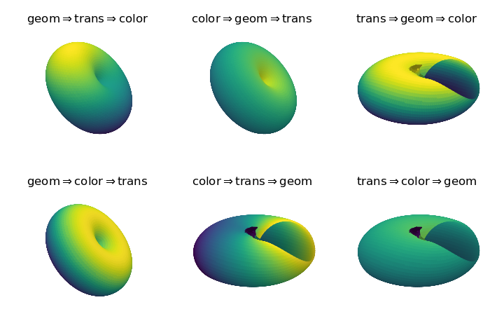
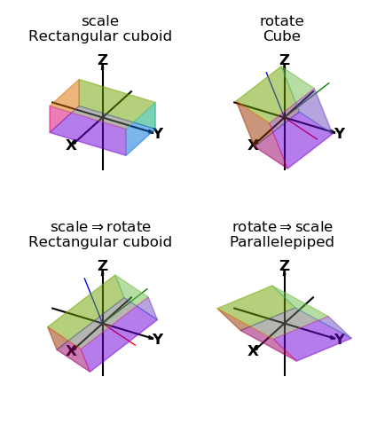
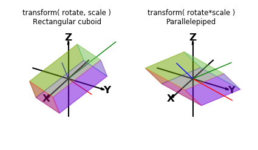

OOPs, Order of Operations¶
In general, three types of operations on a surface object affect the final visualization.
- geometric
- color
- transform
These may be applied in any sequence but the result is dependent on the sequence. There is no sequence which is correct but dependent on the intended result. In the Examples section, various sequences were used to establish the final surface.
Color, Geometry, Rotation¶
The following figure illustrates the different permutations of sequence for identical operations.
For these operations, if a ‘donut’ geometric shape is the final desired result, geometric transforms should preceed any transforms. This includes not only rotations, but scaling and translations. This is probably true in most cases but not a given rule.
In each of these figures, shading was applied to the final object. Shading, in a sense, is an operation that is both controlling color but dependent on orientation relative to the relative illumination direction. In the View_init() Azim Reset and Shading animation example, this relation between orientation and view was considered.
Scale, Rotation¶
The order of scaling and rotating a surface affects the final configuration of the surface. In the following example, a cube is transformed by scaling and rotating in different sequences by separate transform method operations. The lower set demonstrates the effect of transform order. Included in the surface plots are shown the transformed x,y,z axes colored red, green, and blue respectively. The transformed axes reflect the coordinates of the last transformation. As a result, the lower right axes are aligned with the original axes and the lower left axes all have the same length.
When rotations and scaling are performed using one transform method call, the order of operation is to scale, then rotate. A single ‘rotational’ transformation matrix can be computed by multiplying the rotation matrix by the scaling array. The resulting rotational matrix will not be orthogonal but may be used as a rotate parameter in the transform method without scaling. As seen in the following plots, the transform effect is the same as using the order of rotations then scaling. Also note in the right plot, the axes have been skewed since the rotation is not orthogonal.
Python Script¶
The script used to create plots for comparing the order of operation for color, geometry and rotation is given below
import numpy as np
from matplotlib import pyplot as plt
import s3dlib.surface as s3d
#.. OOPs, Order of Operations
# 1. Define functions to examine ....................................
def torusFunc(rtz) :
r,t,z = rtz
ratio = 0.9
f = 1 + ratio
Z = ratio*np.sin(z*np.pi)/f
R = (r + ratio*np.cos(z*np.pi))/f
return R,t,Z
# 2. Setup and map surfaces .........................................
rez=5
shading, lumin = 0.5, [0,0,1]
rotation = s3d.eulerRot(105,45)
cmap_func = lambda rtz : 1+rtz[2]
torus_1 = s3d.CylindricalSurface(rez)
torus_1.map_geom_from_op( torusFunc )
torus_1.transform( rotate=rotation)
torus_1.map_cmap_from_op( cmap_func )
torus_1.shade(shading,lumin)
title_1 = r'geom$\Rightarrow$trans$\Rightarrow$color'
torus_2 = s3d.CylindricalSurface(rez)
torus_2.map_cmap_from_op( cmap_func )
torus_2.map_geom_from_op( torusFunc )
torus_2.transform(rotate=rotation)
torus_2.shade(shading,lumin)
title_2 = r'color$\Rightarrow$geom$\Rightarrow$trans'
torus_3 = s3d.CylindricalSurface(rez)
torus_3.transform(rotate=rotation)
torus_3.map_geom_from_op( torusFunc )
torus_3.map_cmap_from_op( cmap_func )
torus_3.shade(shading,lumin)
title_3 = r'trans$\Rightarrow$geom$\Rightarrow$color'
torus_4 = s3d.CylindricalSurface(rez)
torus_4.map_geom_from_op( torusFunc )
torus_4.map_cmap_from_op( cmap_func )
torus_4.transform(rotate=rotation)
torus_4.shade(shading,lumin)
title_4 = r'geom$\Rightarrow$color$\Rightarrow$trans'
torus_5 = s3d.CylindricalSurface(rez)
torus_5.map_cmap_from_op( cmap_func )
torus_5.transform(rotate=rotation)
torus_5.map_geom_from_op( torusFunc )
torus_5.shade(shading,lumin)
title_5 = r'color$\Rightarrow$trans$\Rightarrow$geom'
torus_6 = s3d.CylindricalSurface(rez)
torus_6.transform(rotate=rotation)
torus_6.map_cmap_from_op( cmap_func )
torus_6.map_geom_from_op( torusFunc )
torus_6.shade(shading,lumin)
title_6 = r'trans$\Rightarrow$color$\Rightarrow$geom'
# 3. Construct figures, add surfaces, and plot ......................
minmax = (-0.8, 0.8)
title = [ title_1, title_2, title_3, title_4, title_5, title_6 ]
torus = [ torus_1, torus_2, torus_3, torus_4, torus_5, torus_6 ]
fig = plt.figure(figsize=plt.figaspect(0.666))
for i in range(6) :
ax = fig.add_subplot(2, 3, i+1, projection='3d')
ax.set_axis_off()
ax.set(xlim=minmax, ylim=minmax, zlim=minmax )
ax.set_title(title[i])
ax.add_collection3d(torus[i])
plt.tight_layout()
plt.show()
The script used to create plots for comparing the order of operation for rotation and scaling is given below
import numpy as np
import matplotlib.pyplot as plt
from mpl_toolkits.mplot3d import axes3d
import s3dlib.surface as s3d
import s3dlib.cmap_utilities as cmu
#.. OOPs, Order of Transforms
# 1. Define function to examine ....................................
def getCube() :
v = [
[ 0, 0, 0 ], [ 0, 1, 0 ], [ 1 , 1, 0 ], [ 1, 0, 0 ],
[ 0, 0, 1 ], [ 0, 1, 1 ], [ 1 , 1, 1 ], [ 1, 0, 1 ] ]
f = [ [0,1,2,3], [3,2,6,7], [2,1,5,6], [1,0,4,5], [0,3,7,4], [4,7,6,5] ]
vertexCoor = np.array(v).astype(float)
faceIndices = np.array(f)
facecolors = np.array( ['b', 'm', 'c', 'g', 'r', 'y' ] )
surface = s3d.Surface3DCollection(vertexCoor, faceIndices)
surface.set_facecolor(facecolors)
surface.transform(scale=2,translate=[-1,-1,-1])
surface.set_surface_alpha(.3)
return surface
scale, rot = [1,1.5,.5], s3d.eulerRot(55,20,10)
# Figure 1: ========================================================
# 2. Setup and map surface .........................................
box = [None]*4
for i in range(4) : box[i] = getCube()
box[0].transform(scale=scale)
box[1].transform(rotate=rot)
box[2].transform(scale=scale).transform(rotate=rot)
box[3].transform(rotate=rot).transform(scale=scale)
# 3. Construct figure, add surface plot ............................
title = [None]*4
title[0] = 'scale' + '\nRectangular cuboid'
title[1] = 'rotate' + '\nCube'
title[2] = r'scale$\Rightarrow$rotate'+ '\nRectangular cuboid'
title[3] = r'rotate$\Rightarrow$scale' + '\nParallelepiped'
fig = plt.figure(figsize=(4.25,4.8))
minmax = (-1.5,1.5)
for i in range(4) :
ax = fig.add_subplot(2,2,i+1,projection='3d')
s3d.standardAxis( ax, length=2.0 )
ax.set(xlim=minmax, ylim=minmax, zlim=minmax )
ax.set_title(title[i])
ax.set_proj_type('ortho')
ax.add_collection(box[i])
if i == 1 : ax.add_collection3d(box[i].get_transformAxis(2,1))
if i == 2 : ax.add_collection3d(box[i].get_transformAxis(2,1))
fig.tight_layout()
# Figure 2: ========================================================
# 2. Setup and map surface .........................................
crate = [None]*2
crate[0] = getCube().transform(rotate=rot, scale=scale)
crate[1] = getCube().transform(rotate=rot*scale)
# 3. Construct figure, add surface plot ............................
title = [None]*4
title[0] = 'transform( rotate, scale )' + '\nRectangular cuboid'
title[1] = 'transform( rotate*scale )' + '\nParallelepiped'
fig = plt.figure(figsize=(4.25,2.5))
minmax = (-1.5,1.5)
for i in range(2) :
ax = fig.add_subplot(1,2,i+1,projection='3d')
s3d.standardAxis( ax, length=2.0 )
ax.set(xlim=minmax, ylim=minmax, zlim=minmax )
ax.set_title(title[i], fontsize='small')
ax.set_proj_type('ortho')
ax.add_collection(crate[i])
ax.add_collection3d(crate[i].get_transformAxis(2,1))
fig.tight_layout()
# ==================================================================
plt.show()